地政学
コナクリは大西洋岸の港と大統領府、官庁、軍、外国公館が集まる首都です。内陸の鉱山地帯と世界市場を結ぶ出口であり、政変、制裁、投資、港湾管理の変化が街路の緊張として現れます。近隣国との移動も重要です。
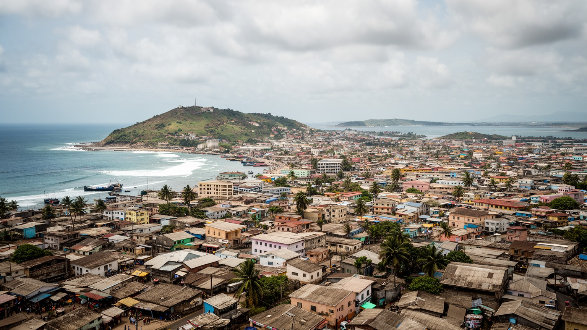
🇬🇳 ギニア / 西アフリカ / World City Atlas
細長い半島と島から広がったギニアの首都です。港、官庁、鉱物輸出、市場、海辺の住宅地、音楽、モスク、停電と渋滞が近い距離で重なり、西アフリカ沿岸の政治と暮らしを映します。
都市の骨格
コナクリは、海に囲まれた細長い都市軸へ首都機能、港湾、住宅、大学、市場が集中します。内陸の鉱山と港を結ぶ回路が国家経済を動かし、同時に水、電力、渋滞、住宅の不足を日常化させています。
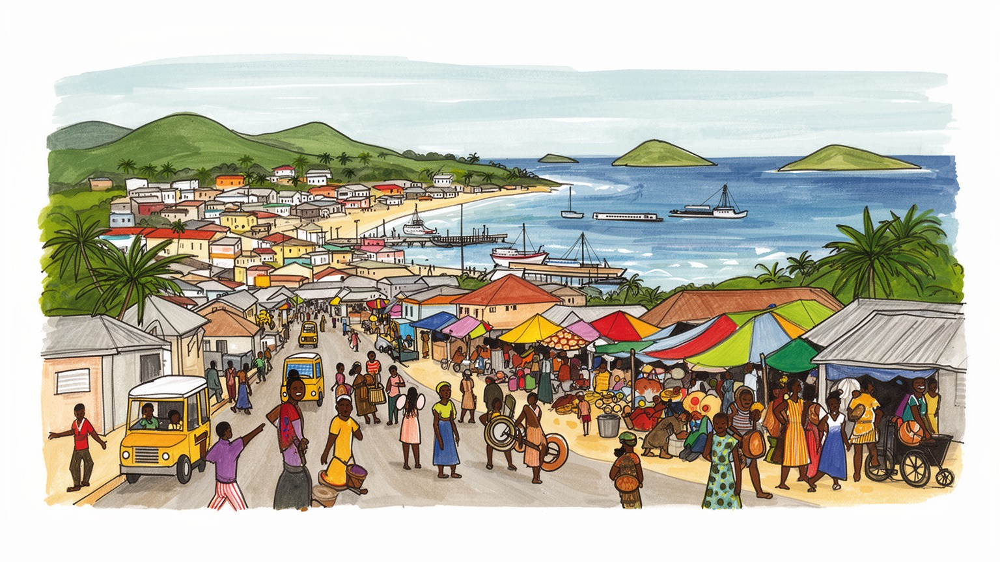
コナクリは大西洋岸の港と大統領府、官庁、軍、外国公館が集まる首都です。内陸の鉱山地帯と世界市場を結ぶ出口であり、政変、制裁、投資、港湾管理の変化が街路の緊張として現れます。近隣国との移動も重要です。
港湾、行政、商業、建設、輸送、食品加工、市場労働が雇用を支えます。ボーキサイト輸出の富は大きい一方、若者の仕事、燃料費、停電、道路混雑、非公式な商いが家計を左右します。収入の不安定さも今続きます。
イスラムの礼拝、家族儀礼、スースー、フラ、マリンケなどの言語、音楽、結婚式、市場の会話が街を形作ります。植民地港の記憶と独立後の政治文化も、海沿いの首都に重なります。祝祭の日は街のリズムも変えます。
観光客は港、島、海岸、博物館、市場、音楽の夜へ向かいますが、住民には水道、電力、交通、家賃、学校、医療が切実です。海辺の開放感と都市サービスの不足が同じ日常にあります。雨季の移動も課題になります。
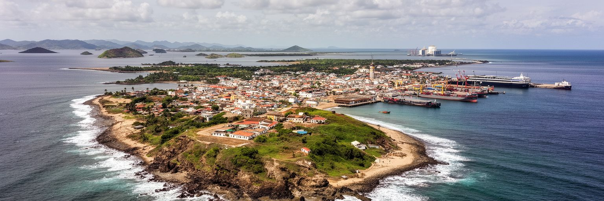
コナクリの地形は、都市の性格を強く決めています。旧市街のあるカローム半島は大西洋へ細長く伸び、港、官庁、銀行、ホテル、外国公館、歴史的な街区が限られた土地に集まります。そこからディキン、ラトマ、マタム、マトトへ市街地が東へ広がり、空港、住宅地、大学、商業地、周辺の集落が連続します。半島都市は海風と景観に恵まれる一方、道路を増やしにくく、渋滞や排水の問題が起きやすいです。通勤路が限られるため、港や官庁に向かう移動は時間を読みづらく、雨季には冠水や路面の傷みが生活を妨げます。海岸線は漁業、物流、観光、住宅、廃棄物処理がぶつかる場所でもあります。都市が伸びるほど、中心へ近い土地は高くなり、低所得の世帯は遠い地区や未整備の場所へ押し出されます。さらに半島の東西移動は、事故や抗議、道路工事があるだけで広い範囲に影響します。学校、病院、市場へ行く小さな用事も、都市の細い形によって長い移動になります。海へ近いほど涼しい一方、塩害や高潮も建物と道路を傷めます。地形は景観ではなく、毎日の費用と時間にもなります。暮らしにも強く響きます。コナクリを読むには、半島の美しい輪郭だけでなく、その細さが移動、水、住宅、港湾管理に与える圧力を見る必要があります。海は開放感を与えると同時に、都市の逃げ場を狭めています。
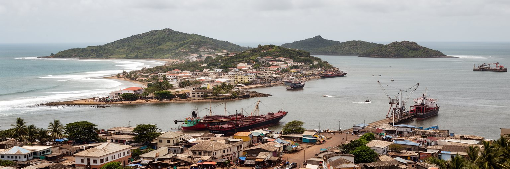
コナクリの経済的な重みは、港と鉱物輸出にあります。ギニアは世界有数のボーキサイト資源を持ち、内陸の鉱山、鉄道、道路、積出港、外資企業、国家財政が一つの回路を作ります。コナクリ港はコンテナ、燃料、食料、建材、日用品も扱い、首都の市場と全国の消費を支えます。鉱物は国に大きな外貨をもたらしますが、その利益が雇用、学校、病院、水道、電力へ十分に届くかは別の問題です。港湾労働者、トラック運転手、通関業者、倉庫作業員、市場商人、修理工、食堂の働き手が物流の表面を支えています。鉱物価格や輸出契約が変わると、国家予算だけでなく、燃料、道路、建設、家計にも影響が出ます。港の周辺では大型車の列、通関を待つ人、燃料を運ぶ車、修理工場、食堂が混じり、国際貿易が生活道路へあふれ出します。輸出が増えても、道路の傷みや粉じん、事故、家賃上昇の負担を受ける住民もいます。倉庫と市場の間では、女性商人や若い運転手が小さな利益を積み上げ、港湾経済を生活へ翻訳しています。税収にも関わります。資源国の首都では、巨大な輸出額と日常の貧しさが近くに並びます。コナクリを見るときは、港に積まれる鉱物だけでなく、そこから生まれる富がどこで止まり、誰の生活へ届かないのかを追う必要があります。港は繁栄の入口であり、分配の弱さを映す鏡でもあります。
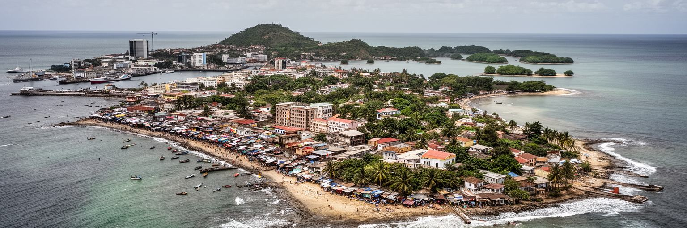
コナクリはギニア国家の政治が最も濃く現れる都市です。大統領府、官庁、軍施設、政党、報道機関、裁判所、国際機関が集まり、選挙、クーデター、抗議、治安部隊の展開、憲法改正をめぐる緊張が街路に表れます。ギニアは独立後、強い国家統制、軍事政権、民政移行、再びの軍主導政治を経験してきました。首都の住民は、政治のニュースを遠くの制度としてではなく、道路封鎖、集会、学校の休校、交通規制、燃料不足、物価の変化として受け止めます。鉱山契約や港湾運営も政治と切り離せず、外資、近隣国、地域機関との関係がコナクリの安定を左右します。一方、政治参加は危険を伴うこともあり、若者、労働組合、市民団体、メディアは自由と安全の間で動きます。家族は抗議の日に子どもを学校へ行かせるか迷い、商人は店を開けるか判断し、運転手は迂回路を探します。政治は抽象的な制度ではなく、その日の収入と安全を左右する身近な条件です。治安の気配は会話の声量や店じまいの早さにも表れ、首都の公共空間を慎重にさせます。信頼を回復するには制度だけでなく、日常の安心が必要です。首都が国家の顔であるほど、権力の過剰な集中も見えやすくなります。コナクリを読むことは、政権の名前を並べることではなく、政治の不確かさが日常の移動、仕事、価格、発言の仕方まで変える仕組みを見ることです。
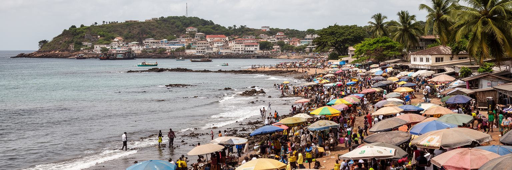
コナクリの暮らしは、市場と街路商業なしには成り立ちません。マディナ市場のような大きな商業地では、米、魚、野菜、布、携帯電話、部品、薬、輸入雑貨、仕立て、食堂、両替、運送が混じり、都市の家計と地方の生産地を結びます。公的な雇用が足りない都市では、多くの人が小売、屋台、運搬、修理、調理、バイクタクシー、日雇いで収入を作ります。非公式経済は不安定で、警察の取り締まり、場所代、雨、停電、燃料費、為替、輸入価格に左右されますが、同時に家族を支える柔軟な仕組みでもあります。女性商人は食料流通と家計の中心を担い、若者は荷運びや配達から仕事の入口を探します。市場の混雑は都市問題として語られますが、そこには信用、仕入れ、人間関係、宗教行事、親族の支援が折り込まれています。朝の仕入れ、昼の値引き交渉、夕方の売れ残りの処理は、家庭の食事や学費の支払いに直結します。都市政策が市場を整えるなら、衛生や通路だけでなく、商人が失う収入と代替場所も考える必要があります。小さな店は都市の大切な安全網でもあります。道路整備や再開発で露店を退かせるだけでは、生活の基盤を壊す可能性があります。コナクリの経済を理解するには、港の輸出額と同じくらい、毎朝の市場で何が売れ、誰が運び、どれだけの余りが家に戻るのかを見る必要があります。
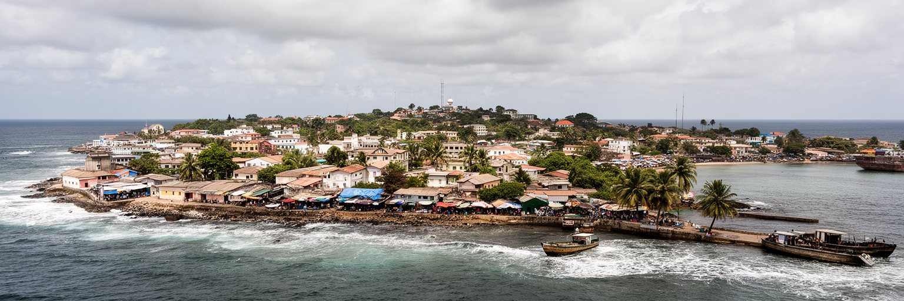
コナクリの日常を左右する大きな条件は、水と電力です。首都であっても、地区によって水道の圧力、停電の頻度、排水、ゴミ収集、道路照明、医療施設への距離は大きく異なります。家庭は貯水容器、井戸、発電機、充電、共同購入、近所の助け合いで不足を補いますが、その負担は女性、子ども、低所得世帯に重くかかります。停電は家庭の明かりだけでなく、冷蔵、通信、学習、病院、食堂、溶接、印刷、携帯充電の仕事まで止めます。水不足は衛生、食事、学校、乳幼児の健康に直結し、雨季の冠水は下水や廃棄物の問題を悪化させます。都市サービスは目立つ記念建築より地味ですが、住民が首都を信頼できるかを決める基盤です。水を買う時間、充電できる店を探す時間、発電機の燃料代は、家計と学習時間を少しずつ削ります。小さな商売ほど停電で商品を失いやすく、病院や学校ほど安定した供給が必要です。サービスの不足は、貧しい世帯ほど高い単価で水や電気を買う逆転も生みます。新しい道路や港湾投資が進んでも、家の近くで安全な水を得られなければ都市の豊かさは実感されません。コナクリの社会課題は、資金不足だけでなく、急増した人口へ設備が追いつかないこと、維持管理の能力、料金を払える家計の差にもあります。水と電気をめぐる毎日の工夫は、この都市の創意と疲労を同時に示しています。
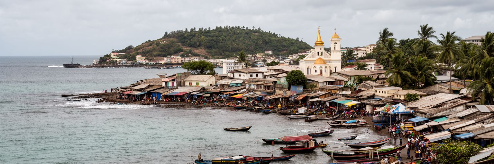
コナクリの社会は、イスラムを中心にしながら、キリスト教、伝統的な信仰、地域ごとの儀礼が重なります。金曜礼拝、ラマダン、タバスキ、結婚式、命名式、葬儀は、家族と近所を結び直す重要な時間です。街ではスースー、フラ、マリンケをはじめ複数の言語が聞こえ、学校や行政ではフランス語も使われます。言語の違いは単なる文化の彩りではなく、商売、政治動員、結婚、就職、教育へのアクセスにも関わります。首都には国内各地から人が集まり、シエラレオネ、リベリア、セネガル、マリなど周辺国との往来もあります。モスクや教会は祈りの場であると同時に、相談、相互扶助、教育、寄付の拠点になります。宗教行事の日には交通や商売のリズムも変わり、家庭は食事、衣服、贈り物の準備に追われます。多民族社会は豊かな音や食を生みますが、政治的な対立や不況の時には出身地や言語が緊張の線になることもあります。結婚式や葬儀では親族が遠方から集まり、都市の家は一時的に地方との結節点になります。若者は複数の言語を使い分けながら、学校、仕事、友人関係を広げています。宗教は都市の互助の基盤です。コナクリの文化を読むには、観光向けの音楽だけでなく、礼拝後の挨拶、市場の交渉、家族儀礼の支え合いを見なければなりません。祈りと言語は、人口の多い首都を毎日つなぎ直す社会の糸です。
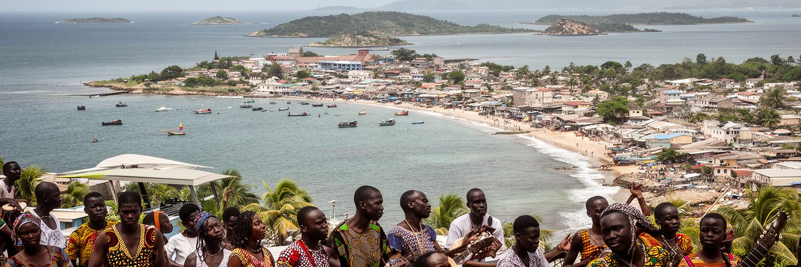
コナクリはギニア音楽の重要な舞台です。独立後の文化政策は、各地のリズム、舞踊、楽器、言語を国民文化として再編し、オーケストラ、舞踊団、ラジオ、祝祭を通じて首都から発信しました。今日も結婚式、クラブ、路上、礼拝後の集まり、スタジオ、携帯電話の動画に、バラフォン、コラ、打楽器、現代的なビートが混じります。音楽は娯楽であるだけでなく、政治を語り、家族の誇りを示し、若者が都市で居場所を作る方法でもあります。演奏家やダンサーの仕事は不安定で、機材、移動、会場、著作権、配信収入の問題がありますが、都市の記憶を運ぶ力は大きいです。市場や浜辺で聞こえる音、タクシーのラジオ、祝祭の衣装、夜の演奏は、コナクリを単なる行政首都ではなく文化首都にしています。植民地港、独立国家、軍政、市民運動、移民の経験は、歌詞やリズムの中で別の形に変わります。音楽は世代間の橋にもなり、年長者が知る地域の旋律と若者のデジタル配信が同じ祝いの場で出会います。言葉が違う人同士でも、踊りやリズムは都市の共有語になります。音は街の記録です。観光客が音楽を楽しむときも、その背後には練習場、家族の支援、安い移動手段、停電に備える機材の工夫があります。コナクリの文化の強さは、困難な都市サービスの中でも人が集まり、踊り、語り、記憶を共有する力にあります。
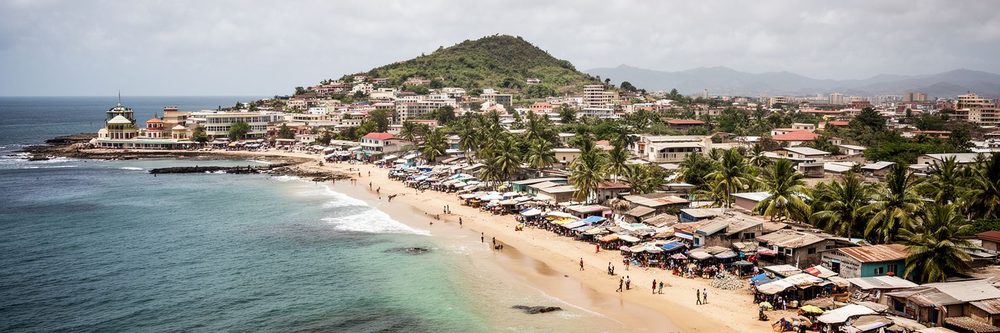
コナクリの観光は、巨大な名所を巡るだけではなく、海と市場と音楽をゆっくり読む旅です。沖合のイル・ド・ロス方面の島々、海岸、港の眺め、国立博物館、モスク、マディナ市場、夜の音楽は、首都の別々の顔を見せます。大西洋の光は都市に開放感を与えますが、海岸には廃棄物、浸食、排水、無秩序な開発、漁民の生活という課題もあります。観光客が歩く場所と住民が働く場所は重なり、漁師、運転手、ガイド、食堂、土産物商、警備、清掃が滞在を支えます。島への小旅行は魅力的ですが、安全な船、天候判断、廃棄物管理、地域への収入還元がなければ長続きしません。海辺のリゾート化が進むほど、住民のアクセスや漁業の場所も守る必要があります。市場を歩く時には、写真を撮る前の挨拶や価格交渉の作法も大切です。観光の成功は、訪問者の好奇心と住民の尊厳が両立する時に初めて深まります。短い滞在でも、朝夕の光や礼拝の時間を意識すると街の見え方は変わります。コナクリの観光の価値は、整ったリゾートだけでなく、港町のざらつき、祈りの時間、市場の密度、夜の音楽を含めて都市を理解できる点にあります。訪問者にとって大切なのは、海の美しさを消費するだけでなく、その海に生活を預ける人々の仕事と環境を尊重することです。海は観光資源であり、食料の場であり、都市問題が流れ着く場所でもあります。
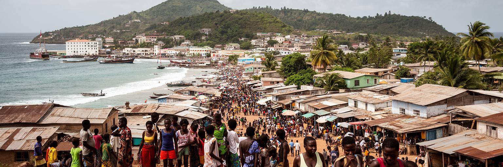
人口が増え続けるコナクリでは、若者の進路と住宅が大きな課題です。地方から来た学生、仕事を探す若者、港や市場で働く人、家族を支える女性、近隣国から来た移住者が、限られた土地と収入の中で住まいを探します。中心に近い場所は家賃が高く、遠い地区に住むほど通勤時間と交通費が重くなります。未整備の住宅地では、排水、道路、学校、医療、電気、ゴミ処理が追いつかず、雨季には移動が難しくなります。若者は携帯電話、音楽、スポーツ、宗教組織、学校、友人関係を通じて都市に居場所を作りますが、失業や不安定な仕事が長く続くと、政治的不満や国外移住の希望も強まります。住宅問題は建物の数だけでなく、仕事へ届く交通、夜の安全、家族を呼べる広さ、家賃を払い続けられる収入と結びつきます。学校を出ても安定した職が少ないと、家族への仕送りや結婚の準備も遅れます。若者の焦りは、都市の文化を活気づける力であると同時に、社会の不安定さにもなります。住まいは希望の土台です。都市が東へ広がるほど、公共交通や道路整備が遅れれば、貧しい世帯ほど時間を失います。コナクリの未来は、港や鉱物投資だけでなく、若い人が学び、働き、家族を持ち、地域に関われる都市条件を作れるかにかかっています。若者が街を離れたいと考える理由を減らすことが、首都の安定にもつながります。
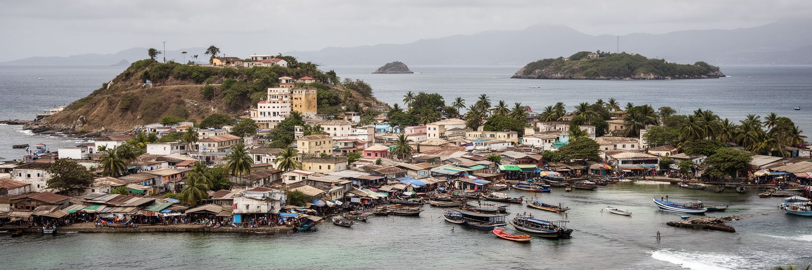
コナクリは熱帯モンスーンの強い雨と海に向き合う都市です。雨季には短時間の豪雨が道路を冠水させ、排水路の詰まり、斜面の浸食、廃棄物の流出、感染症のリスクを高めます。海岸部では高潮、海面上昇、浸食も長期的な課題になります。低所得の住宅地ほど排水や道路が弱く、雨のたびに通学、通勤、病院への移動が止まりやすいです。ゴミ処理が不十分だと、プラスチックや生活廃棄物が水路をふさぎ、さらに冠水を悪化させます。暑さと湿度は屋外労働、学校、病院、食品保存にも影響します。気候リスクは自然現象だけではなく、都市サービスの不足、貧困、住宅立地、行政能力と結びついて被害を大きくします。防災は堤防や排水路だけでなく、ゴミ収集、保健教育、早期警報、歩ける避難路、地域の連絡網を含む必要があります。雨で市場が閉じれば日銭が失われ、道路が切れれば病院へ行けず、海岸が削れれば漁業と住宅が同時に傷みます。気候への備えは環境政策であると同時に、貧困対策でもあります。日々の清掃も大切な防災になります。港や鉱物輸出が国家経済を支えるほど、気候で港湾や道路が止まる影響も大きくなります。コナクリが海とともに生きるためには、海岸の景観を守るだけでなく、水が流れる場所、住んでは危険な場所、衛生を維持する仕組みを正直に整えることが必要です。
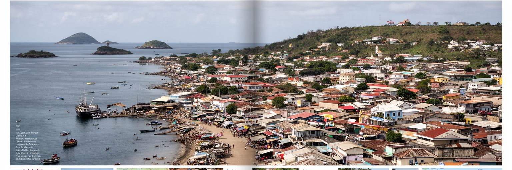
コナクリは、世界都市を金融や観光の規模だけで測れないことを教える都市です。ここでは、大西洋の半島、港、鉱物輸出、軍政後の政治、イスラム社会、市場、音楽、水と電力の不足、若者の進路が同じ都市空間に集まります。ボーキサイトは世界のアルミニウム産業に関わり、港は国際経済へ開いていますが、住民の日常は渋滞、停電、水汲み、家賃、市場価格、雨季の冠水に左右されます。この落差を単なる貧しさとして見ると、都市の重要性を見誤ります。コナクリは資源国の富が首都でどう見え、どう見えなくなるかを示す場所です。政治の不安定さは道路や会話に影を落とし、市場の柔軟さは家計を支え、音楽と信仰は人々をつなぎ直します。海は美しい景観であると同時に、物流、漁業、廃棄物、気候リスクの場でもあります。港湾投資、住宅地の拡大、若者の失業、宗教行事、海岸の浸食は別々の話に見えて、同じ都市の時間を作っています。都市の強さは、輸出額だけでなく、その圧力を受ける住民がどれだけ暮らしを守れるかにも表れます。だからこそ数字と街路を一緒に読む必要があります。コナクリを読むことは、国際市場の原料がどの港から出ていくのか、その港の近くで誰が水を運び、誰が働き、誰が声を上げにくいのかを読むことです。資源、国家、生活の距離が近すぎるほど、この都市の矛盾は鮮明になります。